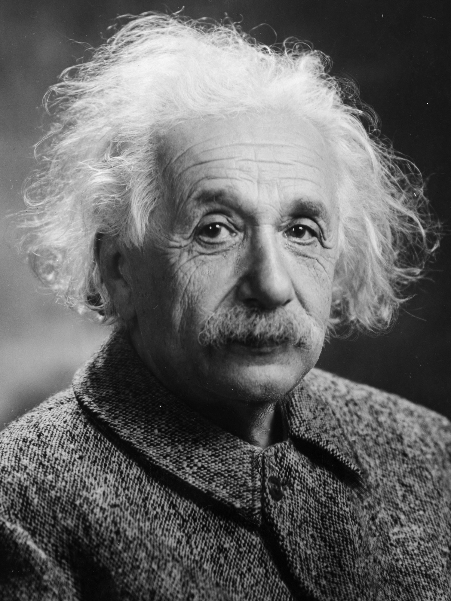
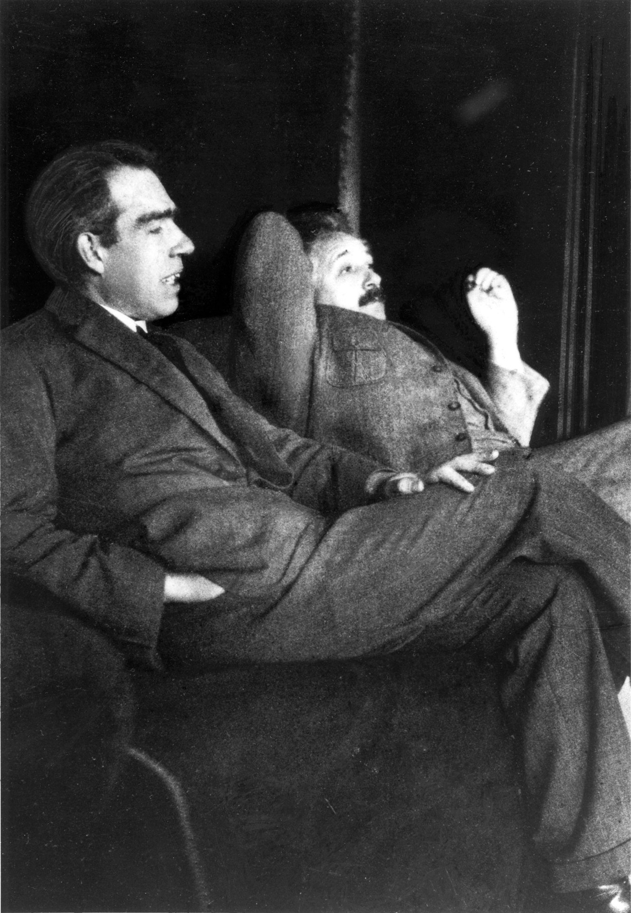
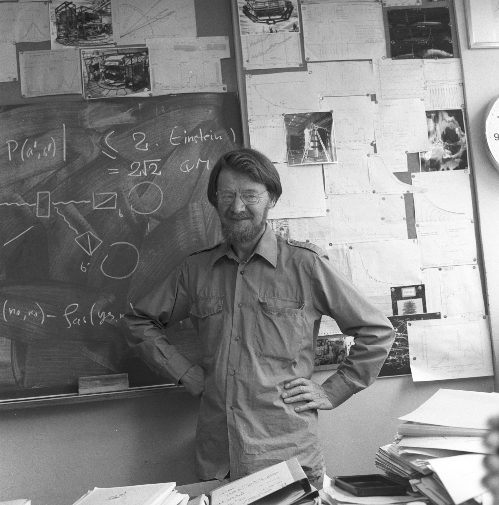
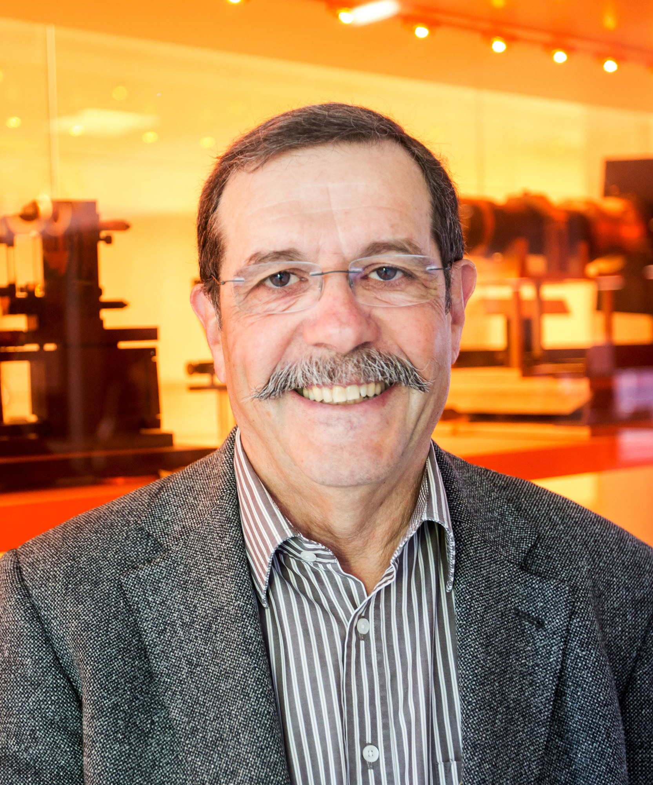
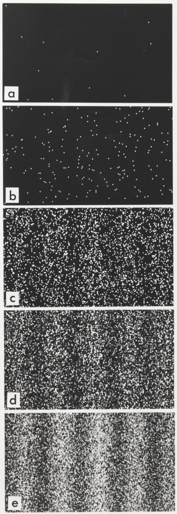
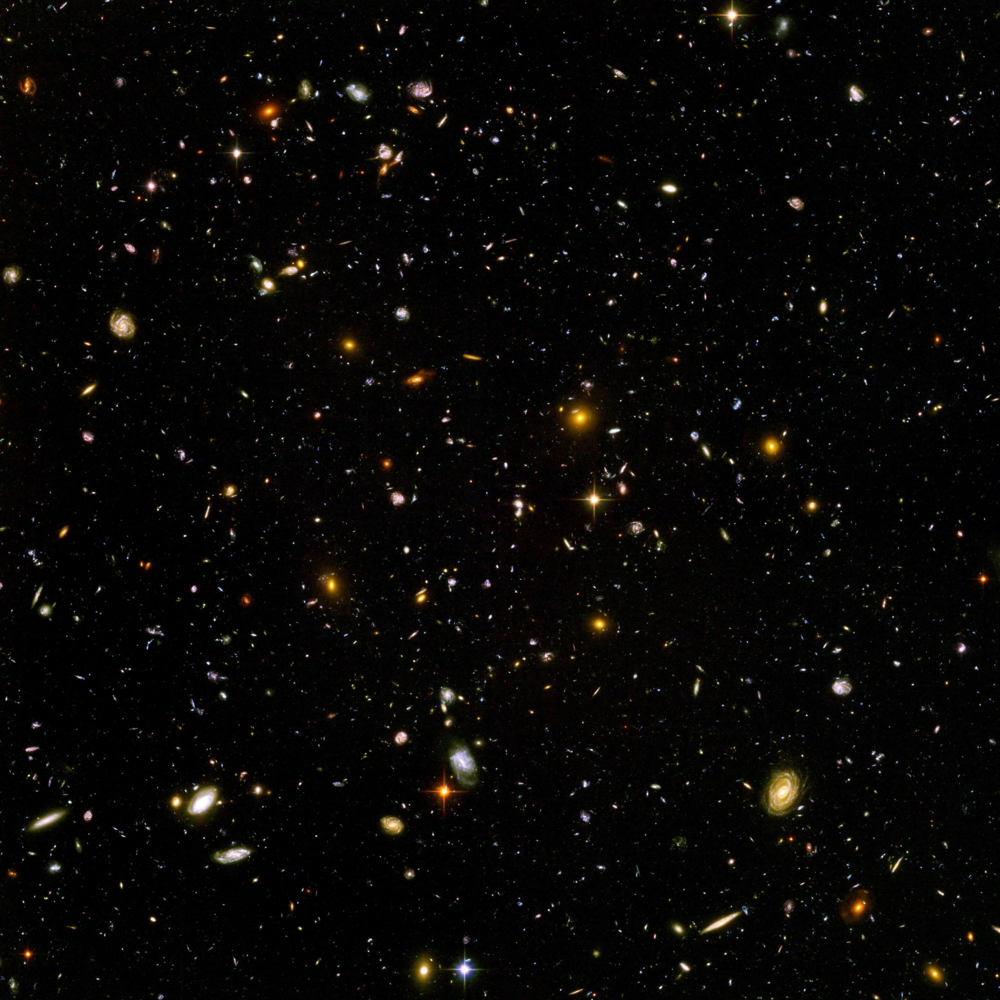
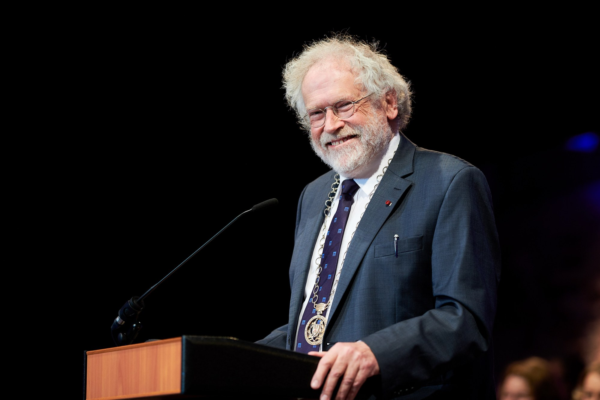

Let's say you have two coins. You flip one in Delhi and the other one in New York, at the exact same moment. Normally, you'd expect nothing special, one lands heads, the other one lands whatever it wants, because how would a coin in New York even know what happened in Delhi? Now imagine that every single time, without fail, the moment you look at the Delhi coin and see heads, the New York coin is tails. Every time. That's weird, right?
Well, in quantum mechanics, this actually happens, not with coins, but with tiny particles like photons and electrons. It's called quantum entanglement. Two particles get linked together in such a way that measuring one of them instantly tells you about the other one, no matter how far apart they are. Across a room, across a country, or across the whole galaxy, it doesn't matter.

Albert Einstein really did not like this. In a letter to his friend Max Born in 1947, he called it "spukhafte Fernwirkung", which in English means "spooky action at a distance." To him, it sounded like magic. His own theory of relativity says nothing, not even information, can travel faster than light. So how can one particle "know" what happened to the other one instantly?
So, how can that be? That's the question this whole essay is about. We'll look at what entanglement really is, how scientists proved Einstein wrong about it, and then a pretty wild idea called the GRID Extra Dimensions Theory, which tries to explain the spookiness by saying space itself is built out of tiny cells, with hidden "wires" running between them. And at the end, we'll ask the big question: could we use any of this to send messages faster than light?
Imagine I have a pair of gloves. I put the left one in one box and the right one in another box, shuffle them, and send one box to you and the other one to your friend on the other side of the world. The moment you open your box and see a left glove, you instantly know your friend has the right one. Nothing travelled anywhere. The answer was already decided when I packed the boxes, you just didn't know it yet.
For a long time, that's exactly what Einstein thought was going on with particles. He believed each particle carried a little hidden "instruction sheet" from the start, which physicists call hidden variables. Quantum mechanics just wasn't seeing them, so it had to be incomplete.
But quantum mechanics says something much stranger. It says that before you measure, the particle doesn't have a definite answer at all. A photon's polarisation, or an electron's spin, is genuinely undecided, it's in a mix of possibilities called a superposition. When two particles are entangled, they share one single combined state. Neither particle has its own answer, but the pair together has a rule, like "whatever happens, we'll come out opposite." The moment you measure one, both answers become real at the same time.
That's literally the whole fight. If it's like gloves, the answers were decided at the start and nothing spooky is happening. If quantum mechanics is right, nothing was decided until you looked. It sounds like a philosophy argument you could never settle, but amazingly, it turned out you can test it in a lab.
In 1935, Einstein, together with Boris Podolsky and Nathan Rosen, wrote a short paper with a pretty bold title: "Can Quantum-Mechanical Description of Physical Reality Be Considered Complete?" People call it the EPR paper, after their initials.
Their argument went like this. Take two entangled particles and send them far apart. If I measure particle A, I can predict the result for particle B with 100% certainty, without touching B at all. And if I can predict something for sure without disturbing it, then, they said, that thing must have been real all along, an "element of reality." But quantum mechanics says it wasn't decided. So either quantum mechanics is missing something, or measuring A somehow instantly affects B far away. And Einstein thought the second option was just ridiculous.

Niels Bohr, the father of the Copenhagen interpretation, replied that you just can't talk about the particles as separate things with their own properties. The entangled pair is one system, and asking "what was particle B's value before we measured?" doesn't really mean anything.
Honestly, for almost thirty years, this was a stalemate. Both sides agreed on what experiments would show, they only disagreed on what it meant. Most physicists just shrugged and got on with calculating things. It took an Irish physicist named John Bell to turn this into something you could actually test.

Bell's idea was really smart. He said, okay, let's assume Einstein is right, every particle carries a hidden instruction sheet and nothing travels faster than light. Then, if you measure the pairs along different angles and compare how often they agree, there's a limit to how strongly they can be correlated. That limit is called Bell's inequality.
So now it's not a matter of opinion anymore. You make thousands of entangled pairs, measure them, calculate S, and see who wins. If you get more than 2, then no hidden instruction sheet can explain it, and the particles really are linked in a way no gloves ever could be.

So, as the EPR paper itself put it, either quantum mechanics is incomplete or something non-local is going on. Bell's experiments showed that any "complete" version with local hidden variables is just wrong. The spooky action is real. Einstein, sadly, lost this one. But here's the thing, nobody really knows how it works. Physics tells us what happens, not what's going on "underneath." And that's exactly the gap the GRID theory tries to fill.
To understand the rest of this essay, we need one more famous experiment: the double slit. You fire particles, say photons or electrons, one at a time, at a wall with two thin slits in it, and see where they land on a screen behind.
If nobody checks which slit the particle went through, something crazy happens. Even though you send them one by one, slowly, after a while the hits build up into a pattern of bright and dark stripes, an interference pattern. That only makes sense if each single particle went through both slits at once, like a wave, and interfered with itself.

Now put a detector at the slits to check which one each particle goes through. The stripes vanish. You just get two plain blobs, like you'd expect from tiny bullets. The act of finding out "which way" forces the particle to pick one path. Physicists call this the collapse of the wave function: before measuring, the particle is a spread-out wave of possibilities, and the moment you measure, it snaps into one definite place.
And here's where it ties back to entanglement. If you have an entangled pair and measure which slit one photon went through, you've also learned which slit its partner went through, instantly. So the collapse doesn't just happen in one place, it happens to the whole entangled system at once, even if the two halves are light years apart. How does the universe do that so fast? Nobody knows. Which brings us to the GRID.
While reading about all this, I came across a presentation of a theory called the GRID Extra Dimensions Theory, also called the QUT, the Quantized Universe Theory. It's not part of mainstream physics, it's a speculative idea, but I found it a really fun and visual way to think about the spookiness, so let's walk through it.
The first idea is that space is not smooth. It's quantized, built out of tiny 3D cells, kind of like how a picture on your phone is built out of pixels. Each cell is around the size of the Planck length, about 1.6 × 10−35 metres, which is so small that if an atom were the size of the whole observable universe, a Planck length would be roughly the size of a tree. Time, too, would tick in tiny steps, each one a Planck time, about 5.4 × 10−44 seconds. The cells don't have to be cubes, they could be spheres, and they could be moving, rotating or vibrating. Cubes just make the drawings easier.
The second idea is the main one. Between the cells, there are extra dimensions, the GRID dimensions. The theory compares them to the wiring in a microchip: the pixels are the cells of space, and the GRID is like the layers of conductors that connect every pixel to every other pixel. The key thing is that the GRID isn't made of space and time like our world is. So inside it, "distance" and "how long" don't mean anything, and a signal through the GRID could reach any cell at once.
Everything we know, Newton's laws, relativity, electromagnetism, gravity, the speed of light, atoms, chemistry, even our own brains and every measuring tool we've ever built, all of it lives inside the cells. So, the theory says, that's why we can't see or measure the GRID directly. We're made of the wrong stuff.
Entanglement, because the two particles are linked through the GRID, where there's no distance.
Wave function collapse, because the "collapse signal" goes to every cell at once through the GRID.
Pauli's exclusion principle, the rule that two electrons can't sit in the same state, because the GRID lets every electron "check" the others instantly.
Let's look at a single photon before anyone measures where it is. In quantum mechanics, its wave function is spread out, and every place has some chance of finding it there. In the GRID picture, that means every cell of space has a probability bigger than zero of "holding" the photon, and the GRID is what keeps all those probabilities connected and in sync.
Then, the moment you measure, a signal goes through the GRID to all the cells at the same time. One cell gets chosen, its probability becomes 1, and every other cell drops to 0. The wave becomes a particle, sitting in one definite cell. Since the GRID doesn't care about distance or the speed of light, this happens everywhere at once, which is exactly what collapse seems to do.
For an entangled pair, it's the same thing, just with two particles sharing one wave. Measure one, the collapse signal runs through the GRID, and the partner's cell is decided at the same instant, even if it's light years away. Einstein's "spooky action" is then just the GRID doing its job.
This is a picture, not a proven theory. Ordinary quantum mechanics already predicts all of these results perfectly without any GRID. So the GRID only becomes real science if it predicts something different that we can go and check. Let's see if it does.
Here's where the theory gets interesting, because if space really is made of cells, then any length we measure has to be a whole number of cells. That includes the wavelength of a particle. Louis de Broglie showed that every particle with momentum p also behaves like a wave with wavelength λ:
Let's call the Planck length h*. If wavelength can only be a whole number N of cells, so λ = N · h*, with N = 1, 2, 3, …, then momentum can only take certain values too:
Now mix in Einstein's relativity, where a moving particle's momentum is p = mass0 · v divided by √(1 − v²/c²). Set that equal to A/N and solve for the speed, and you get the theory's quantized velocity:
That's actually a cool prediction, every particle with mass would have its own personal speed limit. But let's put in real numbers for an electron. Its rest mass is 9.11 × 10−31 kg, so mass0 · c is about 2.7 × 10−22, which is tiny compared to A = 41. That makes the electron's speed limit:
So yes, the limit exists, but it's so absurdly close to c that no experiment we could ever imagine would notice it. Same for the gaps between the allowed speeds. That's a little disappointing, but it's also normal, anything that happens at the Planck scale is ridiculously hard to see. If you push even more energy into a particle that's already at its limit, the presentation suggests that some of its mass would turn into energy (E = mc²) so it can keep speeding up.
Okay, so if the GRID connects everything instantly, can we use it to talk instantly? The presentation describes a clever plan with two people, Yoav (the sender) and Eran (the receiver), light years apart.
Here's the plan. If Yoav turns his which-slit detector on, his photons collapse and he gets two blobs. Since Eran's photons are entangled with his, they collapse too, so Eran should also see two blobs. They agree that means "1". If Yoav turns his detector off, he sees stripes, so Eran should see stripes too, and that means "0". Switch the detector on and off, and you're sending bits across light years, instantly. The photons themselves travelled at light speed, but they were sent in advance, so once they arrive, the "switching" through the GRID is instant.
I really wanted this to work. It's such a neat idea. But it doesn't, and the reason is actually one of the most beautiful facts in physics.
Eran never sees stripes, no matter what Yoav does. When you only look at one half of an entangled pair, the pattern is always just a featureless blur. The stripes only show up later, when Eran and Yoav compare notes and sort Eran's dots into groups based on Yoav's results. And to compare notes, they have to send a normal message, which is limited to the speed of light.
This isn't just theory, it was checked in the delayed-choice quantum eraser experiment (Kim and colleagues, published in 2000). On the receiver's side, the total pattern was always one plain blob. Only after the hits were matched up with the partner photons' results did the stripes appear, hidden inside the blob, in sub-groups that cancel each other out when you add them together. So the receiver's screen looks exactly the same whether the detector on the other side is on or off.
Physicists proved this in general, it's called the no-communication theorem. Measuring one particle of an entangled pair changes the correlations, but never the odds of what the other side sees on its own. Entanglement is spooky, but it can't carry a message. Funnily enough, this is exactly why it doesn't break Einstein's relativity, the universe found a way to be non-local without letting anyone send signals faster than light.
So if the GRID theory wants to keep its faster-than-light phone, it would have to predict that Eran's screen does change. That would contradict ordinary quantum mechanics, and every experiment so far has sided with quantum mechanics. Still, that's what's nice about it: it's a clear, testable difference, and if anyone ever saw Eran's stripes, it would be the biggest discovery in a hundred years.
The faster-than-light phone doesn't survive, but the other big part of the theory, that space is made of tiny cells, is something real physicists take seriously. Lots of theories of quantum gravity, like loop quantum gravity, suggest space could be "grainy" at the Planck scale. The problem is how to see something 10−35 metres wide.
One clever trick is to use the whole universe as the lab. If space is grainy, then maybe light of different energies would move through it at very slightly different speeds, like how a pebble and a marble roll differently over gravel. Over a short distance, you'd never notice. But over billions of light years, the tiny difference adds up.

In 2009, NASA's Fermi telescope caught a gamma-ray burst called GRB 090510, from about 7 billion light years away. A super high-energy photon arrived less than a second after the low-energy ones, after a 7-billion-year race. That ruled out the simplest kinds of "grainy space" where speed changes in a straight line with energy, even right down at the Planck scale. Later, Fermilab's Holometer experiment looked for a tiny "jitter" of space in 2015, and didn't find the version it was searching for.
So far, space looks perfectly smooth to every test we've thrown at it. That doesn't mean it is smooth, it might be grainy in a sneakier way that doesn't affect the speed of light. But it tells us that if cells of space exist, they have to be pretty well hidden, which, funnily enough, is exactly what the GRID theory says about itself.
Honestly, yes, it is. Einstein thought entanglement was too weird to be true, and that particles must secretly carry their answers with them, like gloves in boxes. Bell found a way to test that, and Clauser, Aspect, Zeilinger and many others showed again and again that the gloves idea is wrong. Entangled particles really are linked in a way that ignores distance.
What physics still can't tell us is how. The GRID Extra Dimensions Theory is one attempt at a picture: space made of Planck-sized cells, with hidden dimensions running between them that don't care about space or time. It gives a really nice way to imagine entanglement and collapse happening "everywhere at once," and it even makes some predictions, like a speed limit for every particle. Those predictions turn out to be way too tiny to measure, and its faster-than-light phone runs into the no-communication theorem, which experiments back up. So right now, it's a fun idea to think with, not something we can call true.

And maybe that's the best part. A hundred years ago, entanglement was a thought experiment that even Einstein thought was nonsense. Today, it's being used for quantum computers and unhackable quantum encryption, and in 2017 a Chinese satellite called Micius sent entangled photons to ground stations about 1,200 kilometres apart. The universe is stranger than our intuition, and every time someone, a Nobel winner or just a curious person with a slide deck, tries to picture what's happening underneath, we get a little closer to understanding it.